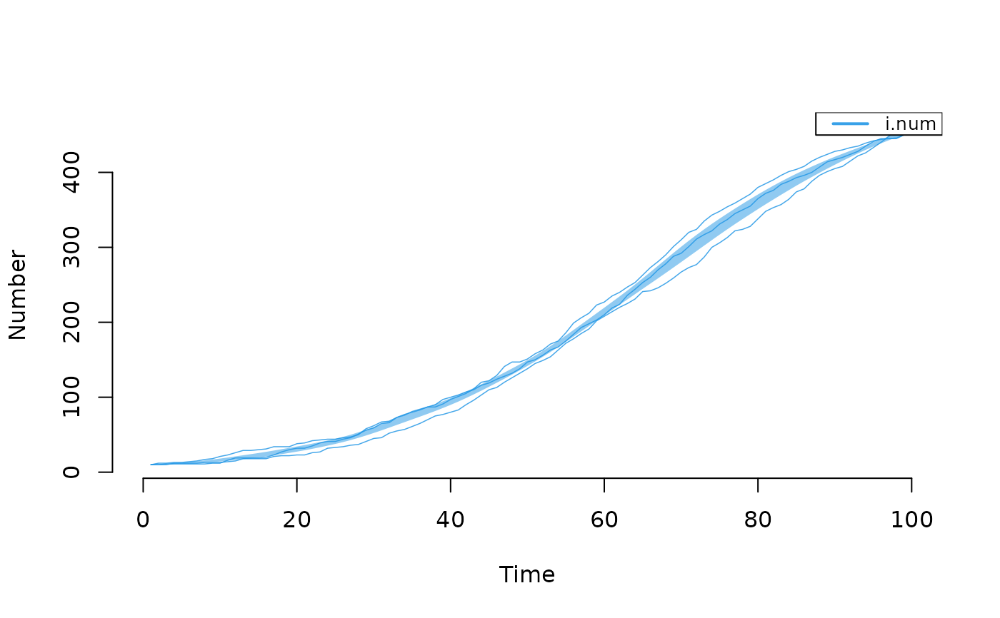
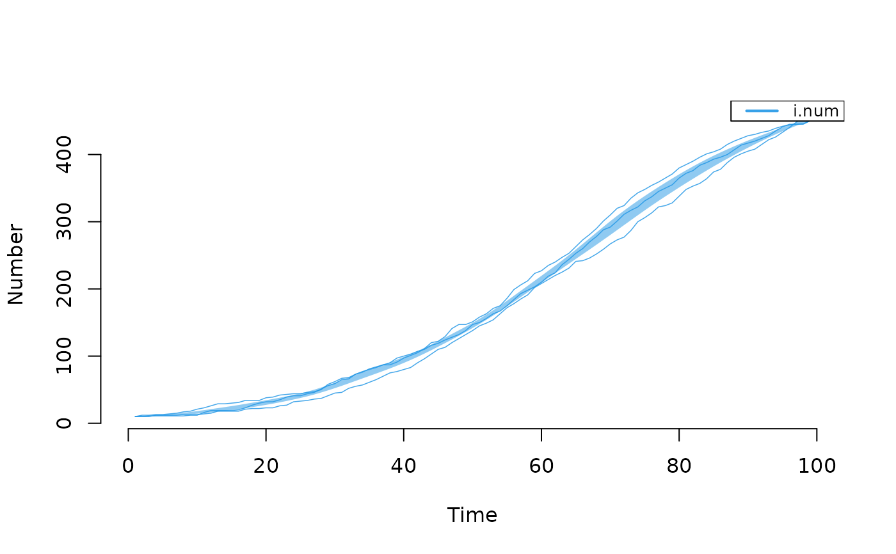

Plots epidemiological data from a stochastic individual contact
model simulated with icm.
Usage
# S3 method for icm
plot(
x,
y,
popfrac = FALSE,
sim.lines = FALSE,
sims,
sim.col,
sim.lwd,
sim.alpha,
mean.line = TRUE,
mean.smooth = TRUE,
mean.col,
mean.lwd = 2,
mean.lty = 1,
qnts = 0.5,
qnts.col,
qnts.alpha,
qnts.smooth = TRUE,
legend,
leg.cex = 0.8,
axs = "r",
grid = FALSE,
add = FALSE,
...
)Arguments
- x
An
EpiModelmodel object of classicm.- y
Output compartments or flows from
icmobject to plot.- popfrac
If
TRUE, plot prevalence of values rather than numbers (see details).- sim.lines
If
TRUE, plot individual simulation lines. Default is to plot lines for one-group models but not for two-group models.- sims
A vector of simulation numbers to plot.
- sim.col
Vector of any standard R color format for simulation lines.
- sim.lwd
Line width for simulation lines.
- sim.alpha
Transparency level for simulation lines, where 0 = transparent and 1 = opaque (see
adjustcolorfunction).- mean.line
If
TRUE, plot mean of simulations across time.- mean.smooth
If
TRUE, use a loess smoother on the mean line.- mean.col
Vector of any standard R color format for mean lines.
- mean.lwd
Line width for mean lines.
- mean.lty
Line type for mean lines.
- qnts
If numeric, plot polygon of simulation quantiles based on the range implied by the argument (see details). If
FALSE, suppress polygon from plot.- qnts.col
Vector of any standard R color format for polygons.
- qnts.alpha
Transparency level for quantile polygons, where 0 = transparent and 1 = opaque (see
adjustcolorfunction).- qnts.smooth
If
TRUE, use a loess smoother on quantile polygons.- legend
If
TRUE, plot default legend.- leg.cex
Legend scale size.
- axs
Plot axis type (see
parfor details), with default of"r".- grid
If
TRUE, a grid is added to the background of plot (seegridfor details), with default of nx by ny.- add
If
TRUE, new plot window is not called and lines are added to existing plot window.- ...
Additional arguments to pass.
Details
This plotting function will extract the epidemiological output from a model
object of class icm and plot the time series data of disease
prevalence and other results. The summary statistics that the function
calculates and plots are individual simulation lines, means of the individual
simulation lines, and quantiles of those individual simulation lines. The
mean line, toggled on with mean.line=TRUE, is calculated as the row
mean across simulations at each time step.
Compartment prevalences are the size of a compartment over some denominator.
To plot the raw numbers from any compartment, use popfrac=FALSE; this
is the default for any plots of flows. The popfrac parameter
calculates and plots the denominators of all specified compartments using
these rules: 1) for one-group models, the prevalence of any compartment is
the compartment size divided by the total population size; 2) for two-group
models, the prevalence of any compartment is the compartment size divided by
the group population size. For any prevalences that are not automatically
calculated, the mutate_epi function may be used to add new
variables to the icm object to plot or analyze.
The quantiles show the range of outcome values within a certain specified
quantile range. By default, the interquartile range is shown: that is the
middle 50\
middle 95\
where they are plotted by default, specify qnts=FALSE.
Examples
## Example 1: Plotting multiple compartment values from SIR model
param <- param.icm(inf.prob = 0.5, act.rate = 0.5, rec.rate = 0.02)
init <- init.icm(s.num = 500, i.num = 1, r.num = 0)
control <- control.icm(type = "SIR", nsteps = 100,
nsims = 3, verbose = FALSE)
mod <- icm(param, init, control)
plot(mod, grid = TRUE)
 ## Example 2: Plot only infected with specific output from SI model
param <- param.icm(inf.prob = 0.25, act.rate = 0.25)
init <- init.icm(s.num = 500, i.num = 10)
control <- control.icm(type = "SI", nsteps = 100,
nsims = 3, verbose = FALSE)
mod2 <- icm(param, init, control)
# Plot prevalence
plot(mod2, y = "i.num", mean.line = FALSE, sim.lines = TRUE)

# Plot incidence
par(mfrow = c(1, 2))
plot(mod2, y = "si.flow", mean.smooth = TRUE, grid = TRUE)
plot(mod2, y = "si.flow", qnts.smooth = FALSE, qnts = 1)
## Example 2: Plot only infected with specific output from SI model
param <- param.icm(inf.prob = 0.25, act.rate = 0.25)
init <- init.icm(s.num = 500, i.num = 10)
control <- control.icm(type = "SI", nsteps = 100,
nsims = 3, verbose = FALSE)
mod2 <- icm(param, init, control)
# Plot prevalence
plot(mod2, y = "i.num", mean.line = FALSE, sim.lines = TRUE)

# Plot incidence
par(mfrow = c(1, 2))
plot(mod2, y = "si.flow", mean.smooth = TRUE, grid = TRUE)
plot(mod2, y = "si.flow", qnts.smooth = FALSE, qnts = 1)